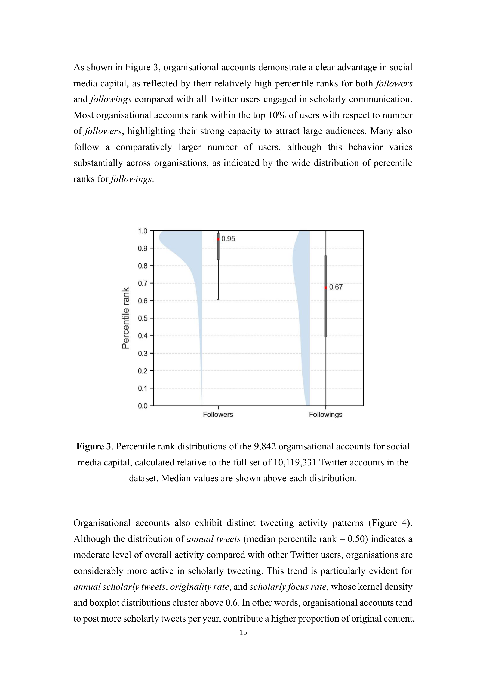

> 저자: Zohreh Zahedi, Yanqing Zhang, Zekun Han, Er-Te Zheng, Zhichao Fang | 날짜: 2026-03-17 | Journal: Journal of Information Science | DOI: arXiv:2603.16637

Figure 2
Figure 2
GRID, ROR, Overton 3개 기관 데이터베이스와 Altmetric, Crossref Event Data 2개 알트메트릭 데이터베이스를 연결하여 학술 출판물을 트윗한 9,842개 연구/정책 관련 기관 계정을 식별했다. 기관 계정은 1,000만 학술 트위터 사용자 대비 팔로워 수 상위 5%(중앙값 백분위 0.95), 학술 트윗 비중 상위 34%(중앙값 백분위 0.66)로 높은 소셜미디어 자본과 학술적 집중도를 보였으나, 인용(quote)과 답글(reply) 같은 대화형 참여에서는 대다수 기관이 하위권(중앙값 백분위 0.00)에 머물러 '방송형(broadcast)' 커뮤니케이션 패턴을 나타냈다. 정부 기관만이 모든 참여 지표에서 상위 성과를 보였다.

Figure 3

Figure 4
총평: 3개 기관 DB와 2개 알트메트릭 DB를 체계적으로 연결하여 학술 커뮤니케이션에 참여하는 기관 계정의 최초 대규모 오픈 데이터셋을 구축하고, 1,000만 사용자 대비 상대적 위치를 정밀하게 분석한 방법론적으로 견고하고 명확하게 작성된 연구로, 알트메트릭스와 과학 커뮤니케이션 분야에 실질적인 기여를 한다.